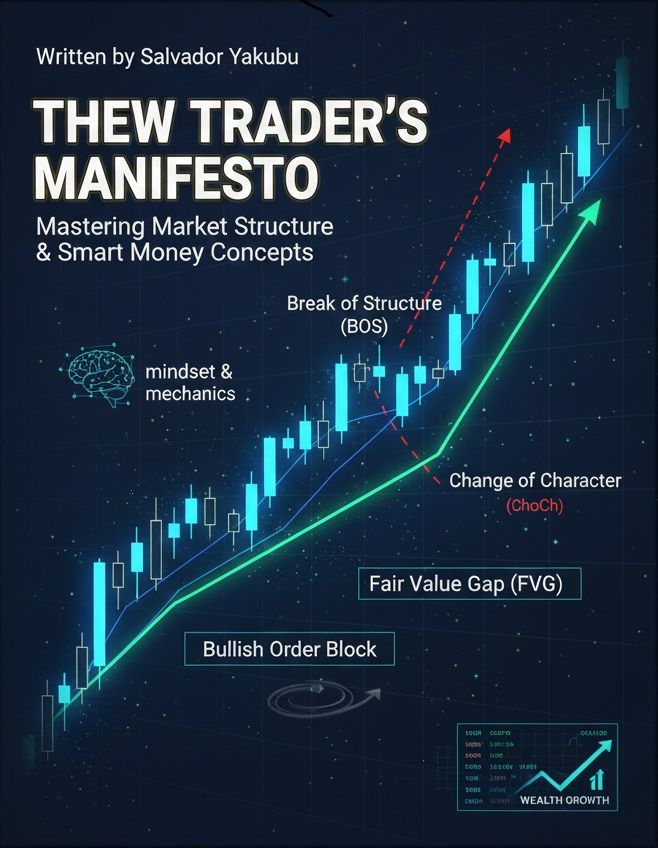

The Man Behind
The Systems.
I am Salvador Zidyep Yakubu, a Cybersecurity student at Federal University, Lafia, based in Kaduna State, Nigeria. My journey is fueled by a dual passion: securing digital frontiers and mastering the language of capital. Whether I'm analyzing institutional liquidity, engineering secure Python prototypes, or educating the next generation of students through Learn and Study Forum, I build with precision.
Academic & Authorship
B.Sc. Cybersecurity
Federal University, Lafia
Focusing on threat intelligence and secure system architecture.Author: Understanding Forex Trading
Bridging the gap between retail trading and institutional SMC setups.
Strategic Discipline
Forex & Commodities
Specializing in XAUUSD and BTCUSD via Market Structure Shifts (MSS).
Chess Strategy
International Chess Federation member — using the board to master patience and risk.
Education & Community
Learn and Study Forum
Created learnandstudyforum.com.ng — an educational platform designed to help Nigerian JAMB candidates and university students with study resources, past questions, and academic guidance.
Kaduna State
Based in Kaduna State, Nigeria. Actively contributing to tech and education across the country.

Understanding Forex Trading
This 2025 release decodes institutional liquidity for the modern trader. It covers the exact Fair Value Gap (FVG) and Order Block strategies used in professional SMC analysis.
- ✔ Institutional Liquidity
- ✔ Market Structure
- ✔ Risk Mastery
- ✔ Gold & Bitcoin Setups